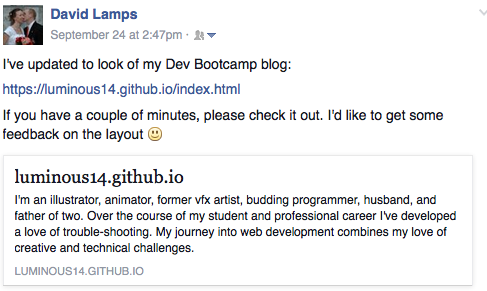

Asking the Right Questions
When I worked at Rhythm & Hues I got my first taste of programming. Whenever I had questions, I would go to a couple of coworkers or Google searches for answers. Usually coworkers were the most help, but several occasions stackoverflow lead me to an answer. During Phase 0 I've posted a couple of questions in my DBC Google+ community, but I foresee a day when I might be posting a question in a tech forum like stackoverflow. When asking people to help with tech questions, it's important to ask in a way that's going to be easy on those trying to help you, and that will actually result in helpful answers.
The questions I've posted on Google+ have generally gotten responses, and I've received answers. Recently a couple of my questions went without definitive answers, however. The first was this post on Google+
I appreciated hearing from Takaaki and Christopher that they were having the same issue as me, but was hoping to hear a definite "Yes, there is a way and here's how" or "No, there's no way." It was a minor issue so it didn't bother me. I believe I would have been more successful in finding an answer if I had either sent an email to DBC directly, or sent an email to sqlZoo directly with my question.
My second unanswered question was actually a request I made on facebook for friends to give feedback on my blog. I wasn't particularly surprised that I didn't get a wave of responses, but I thought I'd at least get one or two. Admittedly, I was trying to take the lazy way out in my attempt to get facebook feedback. Similarly, I posted my blog in my DBC community to which I got some feedback, but didn't receive any constructive criticism.
I bit the bullet and identified persons to send a link to my blog and ask them specifically for critical feedback. This worked! I got fantastic responses from three people and was able to use their feedback to improve my site.
As for technical questions, again I haven't asked very many in writing, and none really in a forum. Reading the articles How do I ask a good question? and Writing the Perfect Question has been helpful and enlightening.
Here are some of the basics of asking a good technical question on forums such as stackoverflow:
● Write a title that summarizes the specific problem.
● Introduce the problem before posting any code.
● Explain the context. State the language, platform, OS, relevant software, constraints, etc. Explain what you've already tried, and how and why it didn't work and provide error messages.
● Include just enough code and info so that others can reproduce the problem easily. Keep it as brief as possible.
● Include all relevant tags. This will send alerts to others in the community who are following particular topics.
● Proof-read before posting. Grammar and formatting matter. This makes it easier for others to understand the question. Remember, no one is getting paid to help you, so be accommodating to your forum members!
● Be conscious of making a good impression. Register as a member on the forum and choose a meaningful user name, ie. not "user5431" or "Coding Guru". Respond to the users who comment on your post. See the "Making a good impression" section of this article.
● If your question isn't received well, find out why and change your approach. Do more research on asking good questions!
I've heard the statement, "There is no such thing as a dumb question", but that doesn't mean the question will get an answer. Thoughtfulness can help polish even our "dumb" questions such that they will be received well. In the words of Carl Sagan:
"There are naive questions, tedious questions, ill-phrased questions, questions put after inadequate self-criticism. But every question is a cry to understand the world. There is no such thing as a dumb question".